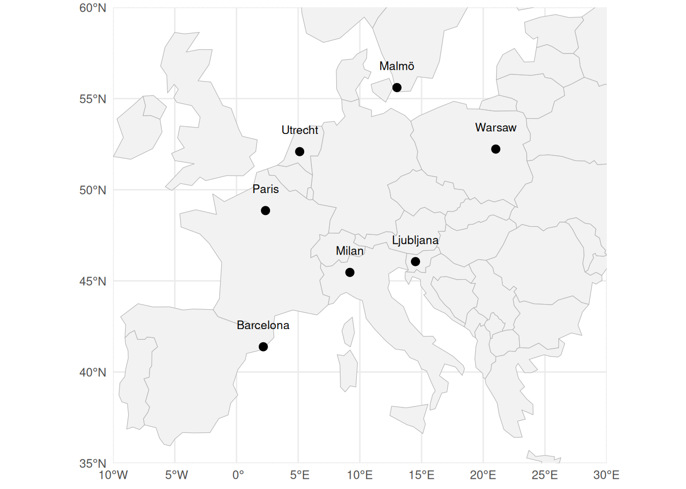
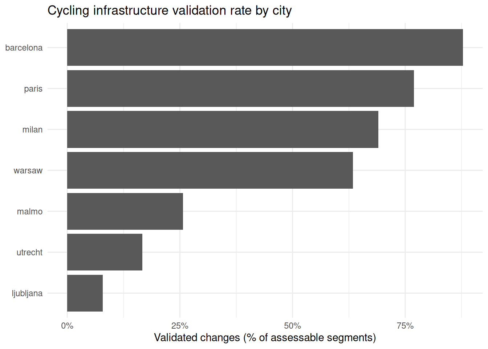

| city | baseline_snapshot | followup_snapshot | approximate_period |
|---|---|---|---|
| Barcelona | 2020 | 2024 | 2019–2023 |
| Milan | 2017 | 2022 | 2016–2021 |
| Paris | 2021 | 2026 | 2020–2026 |
| Warsaw | 2019 | 2024 | 2018–2024 |
| Utrecht | 2023 | 2026 | 2023–2026 |
| Malmö | 2018 | 2023 | 2018–2022 |
| Ljubljana | 2019 | 2023 | 2019–2023 |
Validating longitudinal OpenStreetMap-based cycling infrastructure detection across European cities
1. Introduction
Urban cycling infrastructure has expanded rapidly across many European cities over the last decade, driven by growing concerns about sustainability, public health, traffic congestion, and climate change. Municipal governments have increasingly implemented cycling-related interventions, including segregated cycleways, painted bicycle lanes, filtered streets, and wider street-space reallocations aimed at promoting active mobility. Despite the growing policy relevance of these transformations, obtaining consistent longitudinal data on the evolution of cycling infrastructure across cities remains challenging. Official datasets are often incomplete, unavailable for historical periods, or inconsistent across local contexts, limiting comparative research on urban cycling transitions.
OpenStreetMap (OSM) has emerged as a potentially valuable source for studying cycling infrastructure due to its global coverage, open accessibility, and detailed representation of street networks and bicycle-related attributes. Recent studies have increasingly used OSM to examine cycling accessibility, infrastructure provision, and active mobility environments. However, much less attention has been paid to the validity of using longitudinal OSM snapshots to detect changes in cycling infrastructure over time. This is particularly important because OSM reflects not only real-world infrastructure transformations, but also the dynamics of volunteer mapping practices, tagging conventions, and delayed edits.
Previous work in Barcelona demonstrated that combining longitudinal OSM snapshot differencing with manual validation using historical Google Street View (GSV) imagery can provide a reproducible framework for detecting cycling infrastructure change. That study showed relatively high recall and moderate-to-high precision for major cycling infrastructure additions, while also highlighting important limitations related to temporal mismatches, tagging heterogeneity, and imagery availability. However, it remains unclear to what extent such a framework can be transferred across different urban, political, and mapping contexts.
Building on this previous work, the present study extends the validation framework to seven European cities with differing population sizes, cycling traditions, urban forms, political cycles, and OSM mapping cultures: Barcelona, Milan, Paris, Warsaw, Utrecht, Malmö, and Ljubljana. Using paired historical OSM snapshots selected to approximate recent municipal electoral periods, we detect cycling infrastructure additions and conduct manual validation through historical GSV imagery. The study aims to assess the cross-city robustness and transferability of OSM-based longitudinal cycling infrastructure detection, while identifying the contextual factors that influence validation performance across different urban environments.
Beyond evaluating the reliability of OSM-derived cycling infrastructure change detection, the study also contributes to broader discussions regarding the opportunities and limitations of volunteered geographic information for longitudinal urban policy analysis. By comparing validation outcomes across multiple European contexts, the paper provides insights into the extent to which OSM can support comparative research on cycling transitions and street-space transformation processes over time.
2. Data and methods
2.1. Study design and case-study cities
This study applies a longitudinal OpenStreetMap (OSM)-based framework to detect and validate cycling infrastructure transformations across seven European cities: Barcelona, Milan, Paris, Warsaw, Utrecht, Malmö, and Ljubljana (Figure 1). These cities were selected because they represent diverse population sizes, urban forms, cycling cultures, political contexts, and OSM mapping environments. Together, they provide a useful test bed for assessing the transferability of OSM-based longitudinal infrastructure detection across heterogeneous European urban contexts.
For each city, pairs of historical OSM snapshots were selected to approximate recent municipal electoral periods. Because historical OSM extracts are available only for specific dates, snapshot dates do not perfectly coincide with election dates. The selected snapshots therefore serve as temporal proxies for broader political periods. An additional exploratory period was also examined for Milan to assess more recent transformations following the 2021 municipal election.
Table 1 summarises the baseline and follow-up OSM snapshots used for each case-study city together with the approximate municipal electoral periods they were intended to represent. Because historical OSM extracts are available only for specific dates, the selected snapshots should be interpreted as temporal proxies rather than exact representations of electoral cycles.
The analysis focuses specifically on cycling infrastructure additions. Following the approach developed in the previous Barcelona validation study, the workflow aims to detect visible cycling infrastructure transformations represented within OSM through changes in cycleway-related tags and geometries between two historical snapshots.

2.2. OpenStreetMap data and cycling infrastructure extraction
Historical OSM road-network data were obtained for each city using regional extracts corresponding to the selected baseline and follow-up dates. Networks were projected into local projected coordinate reference systems to allow accurate geometric operations and length calculations.
Cycling infrastructure was extracted using a conservative and intentionally restrictive tagging definition focused on visible cycling facilities. The extraction retained:
- dedicated cycleways mapped as
highway=cycleway; and - street segments containing explicit cycleway-related tags indicating bicycle lanes or tracks, including:
cyclewaycycleway:leftcycleway:rightcycleway:both
Relevant values included:
lanetrackopposite_laneopposite_track
Tag matching was conducted case-insensitively.
The extraction intentionally excluded tags such as cycleway=shared_lane in order to prioritise clearly identifiable cycling infrastructure and reduce ambiguity during manual validation. Consequently, the resulting cycling network should be interpreted as a conservative representation of visible cycling infrastructure rather than a complete inventory of all cycling-related street interventions.
2.3. Detection of cycling infrastructure transformations
Cycling infrastructure transformations were identified through longitudinal differencing between baseline and follow-up OSM snapshots. For each city, cycling infrastructure geometries from the two periods were spatially compared to identify newly added infrastructure segments.
To reduce false positives associated with minor geometric corrections, positional inaccuracies, or line realignments, the workflow incorporated several geometric processing steps. Networks were first standardised and dissolved before applying spatial differencing operations. Small fragments below a minimum length threshold were removed, and near-overlapping additions and removals within a predefined distance threshold were treated as potential realignment artefacts rather than genuine infrastructure changes.
The resulting outputs consisted of spatial segments representing candidate cycling infrastructure additions occurring between the selected OSM snapshots.
2.4. Validation sampling and Google Street View assessment
Detected cycling infrastructure additions were manually validated using historical Google Street View (GSV) imagery. For each city, sampled segments were visually inspected to determine whether a visible cycling infrastructure transformation occurred between the baseline and follow-up periods.
Validation was conducted using imagery as close as possible to the baseline and follow-up snapshot dates. Both the year and month of imagery acquisition were considered when interpreting whether a transformation likely occurred within the study period, particularly for imagery captured close to baseline dates. When imagery for the target periods was unavailable or ambiguous, earlier and later imagery was additionally inspected to determine whether:
- the infrastructure already existed before the baseline period;
- the transformation occurred after the follow-up period; or
- no detectable transformation occurred.
Each sampled segment was classified as:
yes: a cycling infrastructure transformation was clearly visible between the baseline and follow-up periods;no: no transformation occurred within the target period, or the detected OSM change was clearly incorrect; orNA: the segment could not be confidently assessed due to insufficient or ambiguous imagery.
Additional comments were recorded to document timing ambiguities, imagery limitations, or unusual cases.
2.5. Cross-city validation assessment
Validation outcomes were summarised for each city to assess the proportion of detected cycling infrastructure additions that corresponded to visible real-world transformations. Comparative analyses focused on identifying differences in validation performance across urban contexts, including the influence of imagery availability, tagging practices, infrastructure typologies, and local OSM mapping characteristics.
Rather than treating OSM as definitive ground truth, the analysis evaluates the extent to which longitudinal OSM snapshot differencing can provide a reliable proxy for cycling infrastructure transformations across diverse European cities.
3. Results
3.1. Detected cycling infrastructure transformations across cities
The longitudinal OSM differencing workflow identified cycling infrastructure additions across all seven ATRAPA case-study cities. However, the quantity and spatial distribution of detected segments varied substantially between cities. Larger cities such as Barcelona, Paris, Milan, and Warsaw showed a relatively large number of candidate cycling infrastructure additions, whereas Malmö and Ljubljana produced considerably fewer detectable transformations. Utrecht also yielded comparatively limited detectable additions despite its strong cycling profile.
These differences suggest substantial heterogeneity in the extent to which cycling infrastructure transformations are represented through longitudinal OSM edits across different urban contexts.
3.2. Validation outcomes across cities
Validation outcomes varied markedly between cities (Table 2; Figure 2). Barcelona showed the strongest validation performance, with 36 of 41 assessable segments confirmed as genuine cycling infrastructure transformations (87.8%). Paris also showed relatively high agreement between OSM-detected changes and visible street-level transformations, with a validation rate of 76.9%, followed by Milan (69.0%) and Warsaw (63.4%).
By contrast, validation performance was substantially lower in Malmö and Ljubljana. In Malmö, only 6 of 35 assessable segments corresponded to visible cycling infrastructure transformations (17.1%), while Ljubljana showed the lowest validation rate among assessable cases, with only 3 of 38 segments validated (7.9%).
Utrecht presented a distinct situation. Although candidate cycling infrastructure additions were detected through OSM snapshot differencing, historical Google Street View (GSV) imagery was largely unavailable for the relevant follow-up period. Consequently, 44 of the 50 sampled segments could not be confidently assessed, preventing meaningful evaluation of validation performance in the city.
Overall, the results indicate substantial variability in the reliability of OSM-derived longitudinal cycling infrastructure detection across European urban contexts.
| city | n | yes | no | na | assessable | pct_yes_all | pct_yes_assessable |
|---|---|---|---|---|---|---|---|
| barcelona | 50 | 36 | 5 | 9 | 41 | 72 | 87.8 |
| ljubljana | 50 | 3 | 35 | 12 | 38 | 6 | 7.9 |
| malmo | 50 | 9 | 26 | 15 | 35 | 18 | 25.7 |
| milan | 50 | 29 | 13 | 8 | 42 | 58 | 69.0 |
| paris | 50 | 30 | 9 | 11 | 39 | 60 | 76.9 |
| utrecht | 50 | 1 | 5 | 44 | 6 | 2 | 16.7 |
| warsaw | 50 | 26 | 15 | 9 | 41 | 52 | 63.4 |

3.3. Common sources of disagreement
Manual validation identified several recurring causes of disagreement between OSM-detected changes and street-level observations.
One common situation involved cycling infrastructure that was already present in baseline imagery, suggesting that the infrastructure predated the baseline OSM snapshot and was incorporated into OSM only later. In other cases, cycling infrastructure appeared only after the follow-up period, indicating temporal mismatches between real-world implementation and the selected OSM snapshots.
Additional disagreements were associated with ambiguous imagery, limited visibility of cycling facilities, temporary street configurations, or minor geometric edits within OSM that did not correspond to substantive cycling infrastructure transformations. Some detected segments also reflected incremental extensions or remapping of existing infrastructure rather than genuinely new cycling facilities.
The frequency and nature of these disagreements varied considerably across cities, reinforcing the importance of contextual factors in shaping the reliability of longitudinal OSM-based infrastructure detection.
3.4. Cross-city variation in validation performance
The observed cross-city variation suggests that the transferability of OSM-based cycling infrastructure detection depends on multiple contextual factors.
Cities with relatively strong validation performance, including Barcelona, Paris, Milan, and Warsaw, are characterised by larger urban populations, relatively active OSM communities, and substantial visible cycling infrastructure implementation during the study periods. In these contexts, cycling transformations were often clearly identifiable in historical imagery and more consistently represented within OSM.
By contrast, lower-performing cities such as Malmö and Ljubljana may reflect lower mapping intensity, different tagging practices, more incremental infrastructure implementation, or intervention typologies that are less easily captured through the conservative extraction criteria used in this study.
Utrecht highlighted a different limitation associated with the validation process itself. Despite being internationally recognised as a cycling-oriented city, insufficient recent GSV imagery severely constrained manual assessment. This demonstrates that the feasibility of longitudinal validation depends not only on OSM quality, but also on the temporal availability of complementary street-level imagery sources.
Taken together, the results suggest that longitudinal OSM snapshot differencing can provide a useful proxy for cycling infrastructure transformations in some urban contexts, but that validation performance remains highly context dependent.